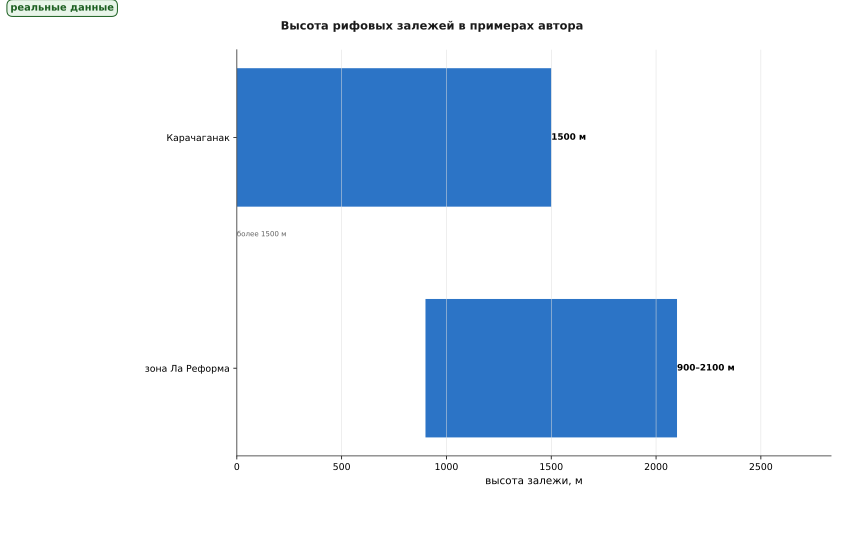

Путь › Что такое риф и как читать его породы › Шаг 1 из 56
Почему небольшие рифы богаты нефтью
В книге: «КРАТКИЕ СВЕДЕНИЯ О ГЕОЛОГИИ РИФОВ И ИХ ТИПАХ» стр. 200
Суть
Рифы — редкие карбонатные тела, но в них сосредоточено порядка 10–12 % мировых запасов углеводородов.
При небольшой площади залежь в рифе может быть очень высокой — до сотен и тысяч метров, отсюда высокая плотность запасов.
Из-за этого интереса за рифы иногда ошибочно принимают любые карбонатные тела, и поиски ставят там, где рифов нет.
Пороговая идея. Не путать площадь залежи с её высотой, а экономический интерес — с геологическим признаком рифа. модель
Как это работает
Что такое риф
Риф — особый тип карбонатных отложений, то есть пород, сложенных в основном карбонатным материалом. В рифе особенно ярко проявлен биогенный способ образования: материал создают и осаждают живые организмы. стр. 200
«Рифы являются весьма специфическим типом карбонатных отложений, где в максимальной степени проявляется биогенный способ образования и осаждения карбонатного материала.»
Редкие, но богатые
Рифы составляют лишь очень малую долю карбонатных отложений и тем более всех осадочных пород. Но в них сосредоточено порядка 10–12 % мировых запасов углеводородов. стр. 200
«Составляя лишь очень малую долю карбонатных отложений вообще, и тем более осадочных образований в целом»
«они содержат порядка 10–12 % мировых запасов углеводородов.»
Высокие залежи
Залежь — скопление нефти или газа в природном резервуаре. В рифах при относительно небольшой площади высота залежи бывает очень большой. стр. 200
«При относительно небольшой площади, высота залежей бывает очень значительной.»
Примеры автора: на месторождении Карачаганак высота залежи превышает 1500 м. На ряде месторождений зоны Ла Реформа в Мексике она составляет 900–2100 м. стр. 200
«Например, высота залежи месторождения Карачаганак превышает 1500 м»
«на ряде месторождений зоны Ла Реформа Мексики колеблется в диапазоне 900–2100 м.»

Почему это выгодно
Автор делает вывод: такая геометрия даёт высокую плотность запасов — много запасов на единицу площади. А это определяет высокую экономическую эффективность разработки. стр. 200
«Это определяет высокую плотность запасов, и высокую экономическую эффективность разработки таких залежей.»
«Это определяет высокую плотность запасов, и высокую экономическую эффективность разработки таких залежей.»
Нюанс: интерес ≠ признак
Есть и обратная сторона. Иногда за рифы принимают карбонатные отложения вообще, особенно с биоморфной структурой, где видны формы организмов. стр. 200
«за рифы принимаются карбонатные отложения вообще, особенно биоморфной структуры»
Тогда поисково-разведочные работы, рассчитанные на рифы, ставят в областях, где рифов нет. Экономическая привлекательность сама не доказывает, что риф есть. стр. 200
«ставятся ориентированные на рифы поисково-разведочные работы в областях, где рифов нет»
Разбор примеров из книги
Карачаганак и зона Ла Реформа стр. 200
Условие. Автор показывает, насколько высокой бывает залежь при относительно небольшой площади.
- В Карачаганаке высота залежи превышает 1500 м.
- На ряде месторождений зоны Ла Реформа высота находится в диапазоне 900–2100 м.
Итог. Такая геометрия объясняет высокую плотность запасов и экономический интерес; это иллюстрация, не расчёт.
Цифры и условия
- Рифы содержат порядка 10–12 % мировых запасов углеводородов. стр. 200
- Карачаганак: высота залежи превышает 1500 м. стр. 200
- Зона Ла Реформа: высота залежей 900–2100 м. стр. 200
Что это значит для данных модель
Храните геометрию, запасы и интерпретацию раздельно.
- Вход
- Площадь и высота залежи, доля запасов, описание структуры пород.
- Выход
- Основание для интереса к объекту и перечень геологических проверок.
- Где ломается
- При подмене признаков рифа его экономической привлекательностью.
- гипотеза Крупная высота при небольшой площади — повод проверить модель тела, но не класс породы.
Где здесь ручной труд специалиста
- Входные данные
- Оценки запасов, размеры залежей, описание пород.
- Ручные шаги
- Свести размеры по объектам, проверить границы и сопоставимость показателей.
- Точки суждения
- Отличить привлекательный поисковый признак от диагноза.
- Время
- Время зависит от согласованности исходных границ и замеров.
- Типичные ошибки
- Перенос высоты отдельной залежи на весь район; отождествление биоморфной породы с рифом.
Аналогия модель
Большая высота при малой площади напоминает большой объём хранения при малой площади стойки.
Где аналогия перестаёт работать: Высота и площадь не сообщают, какая часть массива действительно хранит и отдаёт флюид.
Как это делается сейчас модель
В цифровой модели храните контур залежи и интерпретируемый контур рифа раздельно и указывайте происхождение обоих.
Глубже
Высота не равна свойствам породы модель
Габариты объясняют, почему тело интересует геолога, но одной высоты недостаточно для оценки отдачи: отдельно потребуются сведения о наличии и связности пустот.
Новые понятия
- риф
- Особый тип карбонатных отложений с выраженным биогенным образованием материала. стр. 200
- биогенный
- Связанный с деятельностью живых организмов. стр. 200 модель
- залежь
- Скопление нефти или газа в природном резервуаре. стр. 200 модель
- плотность запасов
- Запасы в расчёте на площадь. стр. 200 модель
- биоморфная структура
- Строение породы, в котором различимы формы организмов. стр. 200 модель
- карбонатные отложения
- Осадки и породы, сложенные преимущественно карбонатным материалом. стр. 200 модель
- флюид
- Жидкость или газ в горной породе. стр. 200 модель
Проверь себя
%
Верный ответ: 12 %
Автор: рифы содержат порядка 10–12 % мировых запасов углеводородов. Где это в тексте (стр. 200) →
Верный ответ: При небольшой площади залежь очень высокая — плотность запасов велика
Большая высота при малой площади даёт высокую плотность запасов и экономическую эффективность. Где это в тексте (стр. 200) →
Верный ответ: За рифы принимают карбонатные отложения вообще; Особенно часто — отложения биоморфной структуры; Поиски, рассчитанные на рифы, ставят там, где рифов нет
Привлекательность рифов не доказывает их наличие, отсюда ошибки отнесения и неверно поставленные поиски. Где это в тексте (стр. 200) →
Источник
Все утверждения шага с дословной цитатой автора и страницей книги (по PDF).
Риф — особый вид карбонатных отложений, где особенно заметна биогенная роль в образовании и осаждении материала. наблюдение
«Рифы являются весьма специфическим типом карбонатных отложений, где в максимальной степени проявляется биогенный способ образования и осаждения карбонатного материала.»
Рифы — малая доля карбонатных и тем более всех осадочных образований. наблюдение
«Составляя лишь очень малую долю карбонатных отложений вообще, и тем более осадочных образований в целом»
В рифах сосредоточено порядка 10–12 % мировых запасов углеводородов. наблюдение
«они содержат порядка 10–12 % мировых запасов углеводородов.»
При относительно малой площади залежь может иметь большую высоту. наблюдение
«При относительно небольшой площади, высота залежей бывает очень значительной.»
В Карачаганаке высота залежи превышает 1500 м. наблюдение
«Например, высота залежи месторождения Карачаганак превышает 1500 м»
На ряде месторождений Ла Реформа высота залежи составляет 900–2100 м. наблюдение
«на ряде месторождений зоны Ла Реформа Мексики колеблется в диапазоне 900–2100 м.»
Описанная геометрия месторождений связана с высокой плотностью запасов. вывод
«Это определяет высокую плотность запасов, и высокую экономическую эффективность разработки таких залежей.»
Высокая плотность запасов выгодна для разработки таких залежей. вывод
«Это определяет высокую плотность запасов, и высокую экономическую эффективность разработки таких залежей.»
Интерес к рифам иногда приводит к неверному отнесению карбонатных отложений к рифам, особенно при биоморфном строении. наблюдение
«за рифы принимаются карбонатные отложения вообще, особенно биоморфной структуры»
Рифоориентированные поиски иногда ставят там, где рифов нет. наблюдение
«ставятся ориентированные на рифы поисково-разведочные работы в областях, где рифов нет»
На этот шаг опираются: шаг 2 «Биостром и биогерм: пласт или холм».